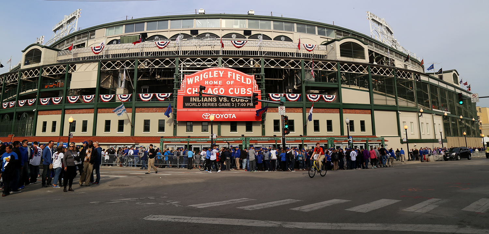

Walk to Millennium Park
V.
We vote 2-1 for a walk to Millenium Park. I warn Bernard and Speedy that it's a perilous trip filled with difficulties--cars, coyotes, heat-stroke, and humans, and that we best pack provisions for the long trip. Bernard carries a water bowl in his mouth, and Speedy, who would rather just hang out inside, walks back upstairs to nap in our captors' bedroom. We hear her bell on her collar bounce each time she walks up a stair. "You know, we have to find a way to get rid of these obnoxious bells, right?" I tell Bernard. "Any humans or predators will hear us miles away."
Bernard says that he has a female friend--a poodle who goes by the name Princess--and who also has a friend, a white squrrel, living in the tree outside her apartment. It's the only apartment with a blue door next to Wrigley Field. This squrriel peddles in black market goods of shiny items. She goes by the name Siren. We may be able to barter the bells and collars in exchange for scissors that will cut the bells of our collars. Our captors locked the scissors and anything sharp due to my prior escape attempt, so this seems like the most logical scenerio. With Speedy not joining us, we devise our escape. Rahul will walk Bernard at 11:30AM right before his noon bike ride. When Joe opens the door, we rush outside in overwhelming force, fleeing from him before he can catch-up to us. Bernard motions for someone to second the motion, and I second.
I hear the ticking from the second hand hitting the twelve on the grandfather clock, and the minute hand pointing to half an hour; the hour hand pointing to the eleven. Rahul walks out of the computer room, muttering movie impressions, and continues doing so while in the bathroom. When he finishes, he heads to the door and puts on his sneakers and grabs the leash. Bernard approaches Rahul, and I tiptoe quietly as possible, making sure to neither draw attention nor ring my bell. Rahul connects the leash on Bernard's collar and opens the door. Just as sunlight pours into family room from the door, Bernard and I rush out the door, surprising Rahul with our abrupt sprint. He trips on front porch, but finds his footing in on the stairs. He stops and grips the leash; Bernard let's out a yelp, flying in midair before landing his butt on the pavement. In the confusion, I'm able to slip out unscene and hide below the stairs. I watch Rahul scolding Bernard from above, and I hear his footsteps as he closes the door and takes Joe out for a walk. Bernard slobbers and drags his feet, yet lacks the strength to coutner Rahul's pull on the leash. He gives up and goes with Rahul, but not without giving me a sad look as they cross the street.
VI.

"Fans descend on Wrigley Field for World Series Game. 3" by Arturo Pardavila III is licensed under CC BY 2.0.
.jpg){kind=link}
I reach the blue door at the apartment across Wrigley Field. Neighrbood critters had provided some directions in exchange for banter and useful gossip. I see a tree outside the building, but I hesitate to climb up in case I startle the squirrel. Plus, she would hear me anyway with this clunky bell that I wear. Instead, I climb up and look into the window to see if any inhabitants reside in the apartment. A large white poodle wearing a red ribbon greets me. She pants and fogs up the window. I write down the words, Bernard's pal, on the window, and we begin talking. She agrees to help me contact the white squirrel, and she barks the name "Siren." Just as I a turn around, I see a white squirrel seated in front of me, tapping a pocket-knife on its hand.
"I seek a way to get this bell and collar off of me," I tell her.
"Yes, I know," Siren says. "You've traveled far and have come to the right place. I will assist you, but for the right price."
"What would that entail?"
"An object of equal value for the services rendered."
"How about you keep the bell and name tag on the collar?"
"No. I want the key to your owner's apartment."
"They're my captors, not owners. Even if you get inside, what's to prevent Bernard and Speedy from making a scene once you get inside? They don't take kindly to intruders.
"If they're your captors, then you won't care about their feelings nor that of your cellmates', am I right? Out of mind, out of sight. After all, you left without them. And as for my methods, I have my ways to avoid detection. Do we have a deal?
She does raise good points, I think. I take a moment to consider her offer.